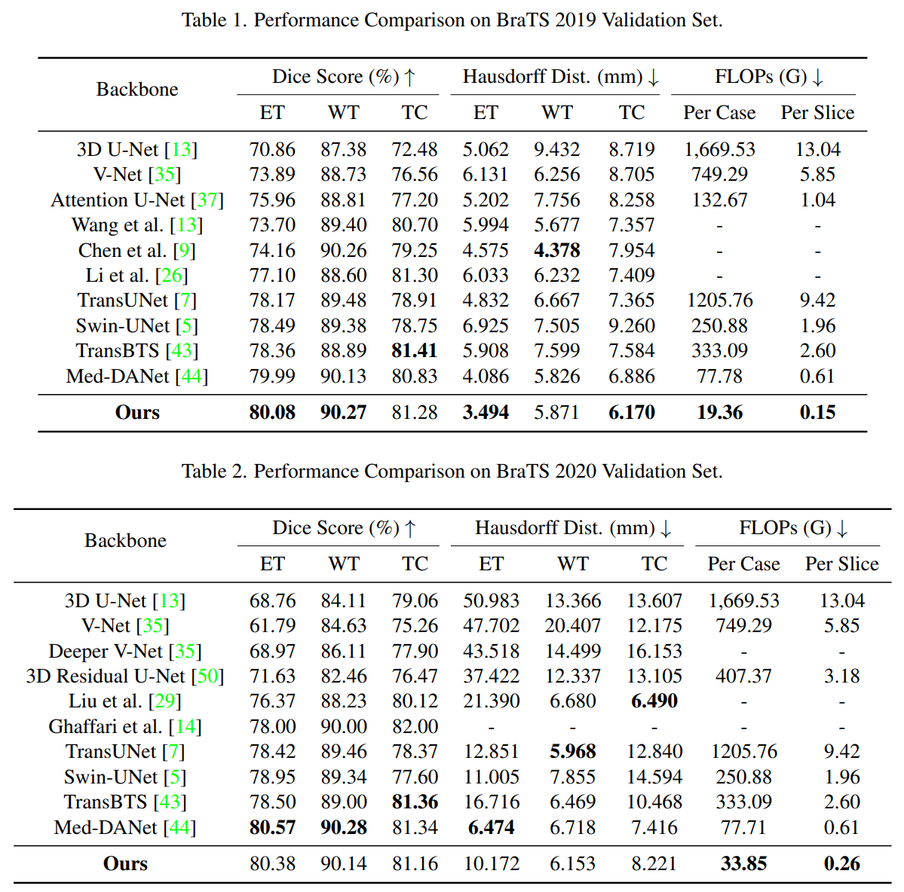

Recent works have shown that the computational efficiency of 3D medical image (e.g. CT and MRI) segmentation can be impressively improved by dynamic inference based on slice-wise complexity. As a pioneering work, a dynamic architecture network for medical volumetric segmentation (i.e. Med-DANet) has achieved a favorable accuracy and efficiency trade-off by dynamically selecting a suitable 2D candidate model from the pre-defined model bank for different slices. However, the issues of incomplete data analysis, high training costs, and the two-stage pipeline in Med-DANet require further improvement. To this end, this paper further explores a unified formulation of the dynamic inference framework from the perspective of both the data itself and the model structure. For each slice of the input volume, our proposed method dynamically selects an important foreground region for segmentation based on the policy generated by our Decision Network and Crop Position Network. Besides, we propose to insert a stage-wise quantization selector to the employed segmentation model (e.g. U-Net) for dynamic architecture adapting. Extensive experiments on BraTS 2019 and 2020 show that our method achieves comparable or better performance than previous state-of-the-art methods with much less model complexity. Compared with previous methods Med-DANet and TransBTS with dynamic and static architecture respectively, our framework improves the model efficiency by up to nearly 4.1 and 17.3 times with comparable segmentation results on BraTS 2019.

@InProceedings{Shen_2024_WACV,
author = {Shen, Haoran and Zhang, Yifu and Wang, Wenxuan and Chen, Chen and Liu, Jing and Song, Shanshan and Li, Jiangyun},
title = {Med-DANet V2: A Flexible Dynamic Architecture for Efficient Medical Volumetric Segmentation},
booktitle = {Proceedings of the IEEE/CVF Winter Conference on Applications of Computer Vision (WACV)},
month = {January},
year = {2024},
pages = {7871-7881}
}
}